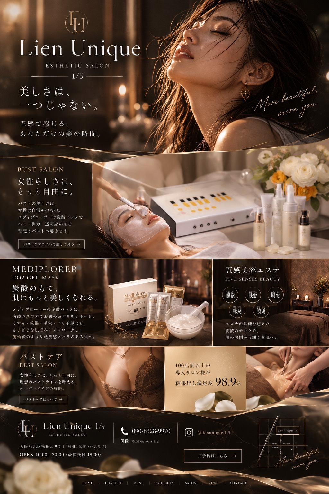
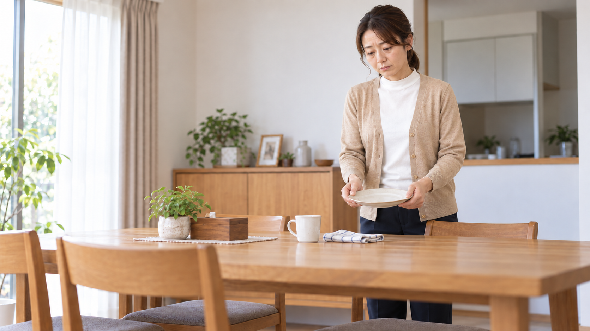
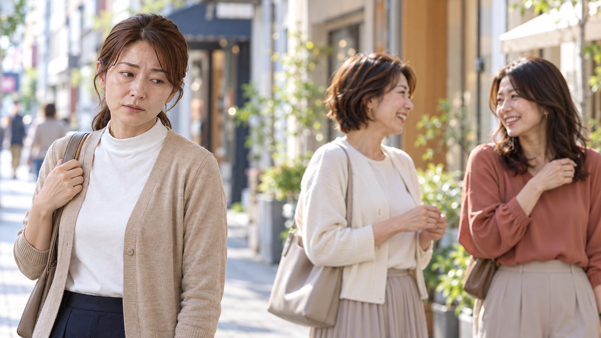
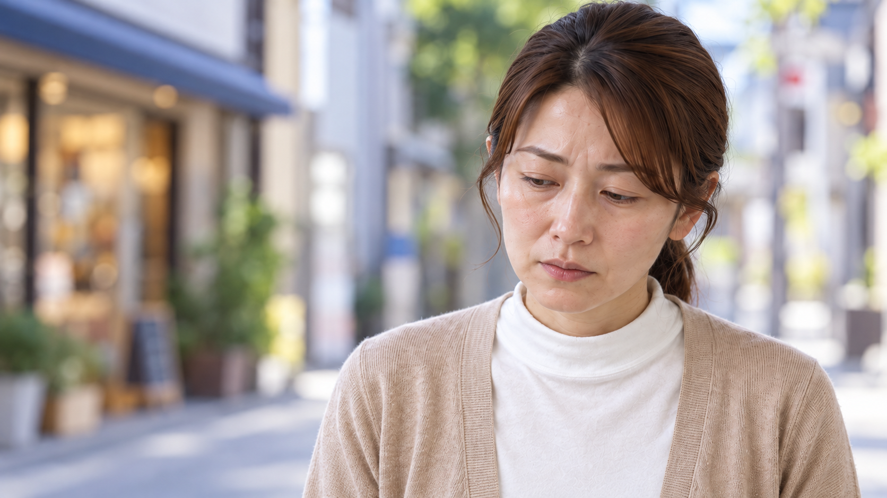
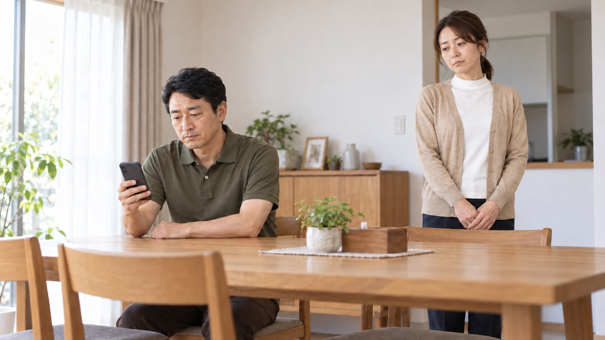
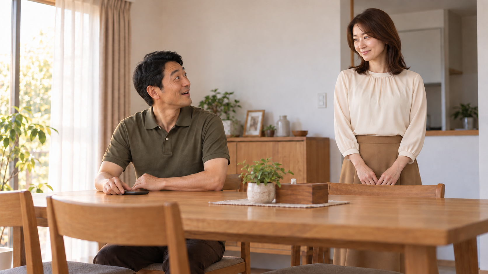
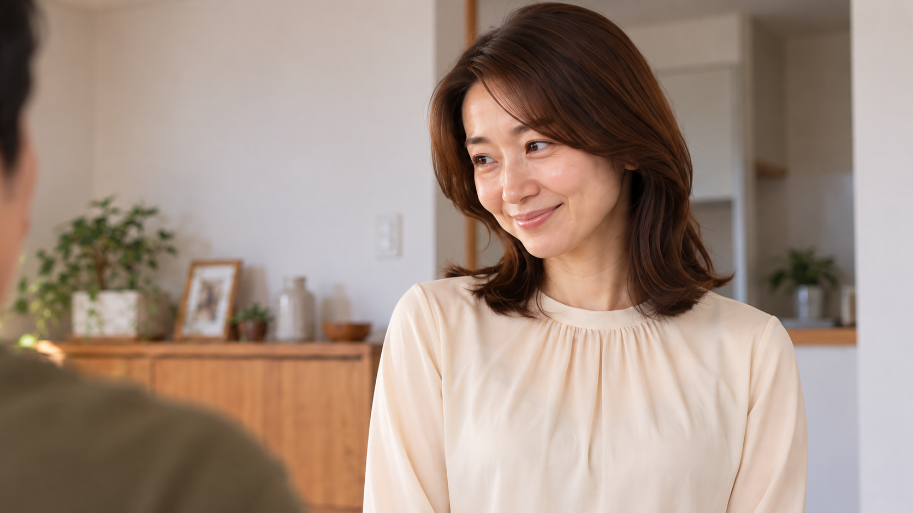

2026.10.28 ／ フェイシャル20シーン版 ／ 共有確認用
Lien Unique1/5
比べてしまう日々から、私らしい笑顔へ。
20シーン版｜受付・相談の視線と、ケア後の髪を調整C11は受付と目を合わせる表情、C12は悩みを話す表情へ。C16は髪を下ろした自然な微笑みを保ち、C02に肌の質感を合わせました。
白い明朝体と余白を生かし、C09は縦組み、施術は大きな横組みに。冒頭・最後のブランド表記とC16のグラデーション文字は維持しています。
新しい感情の流れは「あの人、いいな。」→「比べたくないのに。」→「私も、自分のために。」。周りへの小さな嫉妬から、自分のための来店へつなぎます。
施術8秒、夫の驚き、女性の反応は維持。施術3枚と夫婦の反応2枚を独立シーンにして、新しい2枚を加えました。全45秒／巻き戻し各0.5秒。静止画の切替のみで、音声・実際の逆再生動作は未制作です。
番号が変わりました：旧C12（顔寄り）はC16、旧C13（夫婦の反応）はC17・C18です。
45秒の静止画プレビュー
画像とテロップの順序を確認する無音プレビューです。逆方向の動作は未制作。絵コンテの動作説明は完成時の演出設計です。

演出イメージ・AI画像
画像読込中
20シーンの詳細絵コンテ
C01 ／ 0–3秒 ／ 3秒
まず、何のお店かを伝える
時を戻せるエステサロン
Lien UniqueESTHETIC SALON1/5 演出イメージ・AI画像
画・動作サロン受付の背景に、受領素材のモノグラムとブランドの文字組みを中央配置。業種とコンセプトを一緒に見せる。
画角受領デザインのモノグラム部分を原画像のまま表示。店名は細い欧文セリフ、ESTHETIC SALONを字間広め、1/5を横罫線で挟む。黒・シャンパンゴールドで統一。
声の台本（今回は無音）NA：時を戻せるエステサロン。
つなぎ通常カットで夫婦の街歩きへ。冒頭3秒で業種と店名を読み切れる大きさにする。
伝えることこれは箕面のエステサロンの広告。
C02 ／ 3–5秒 ／ 2秒
先に、取り戻したい日常を見せる

この笑顔になる、少し前へ。
演出イメージ・AI画像
画・動作夫と並んで歩く。夫の話を聞いた女性が自然に笑う。若返った別人ではなく、後日外出を楽しむ同じ女性。
画角腰上の二人。夫より女性の表情がよく見える位置。
声の台本（今回は無音）NA：リアンユニークイチゴ。
つなぎ最後の笑顔を起点に巻き戻しへ。「少し前へ」を2秒見せて意味を先に知らせる。
伝えることこの笑顔に至るまでを、これから見る。
C03 ／ 5–5.5秒 ／ 0.5秒
デートから巻き戻し開始
少し前へ ◀◀
演出イメージ・AI画像
画・動作静止画は直前の笑顔を0.5秒保持。将来の動画演出では足運びが後ろへ戻る。今回、人物は動かさない。
画角C02と同じ画角。派手な渦や光のトンネルは不要。
声の台本（今回は無音）声なし。短い巻き戻し音を想定。
つなぎ0.5秒でサロンの鏡へ切り替える。
伝えること時間をさかのぼっている。
C04 ／ 5.5–7.0秒 ／ 1.5秒
サロンでの時間も、逆順に戻る
少し前へ ◀◀
演出イメージ・AI画像
画・動作明るい表情の寄り0.5秒→ジェルパック0.5秒→受付0.5秒。後半C16と同じ顔の寄りから逆順に戻る。
画角顔の寄り→ケア→受付。文字は短い巻き戻し表示のみ。
声の台本（今回は無音）声なし。巻き戻し音を継続する想定。
つなぎ最後の受付から自宅の鏡へ切り、巻き戻し音を止める。
伝えることサロンに来る前まで戻った。
C05 ／ 7.0–8.0秒 ／ 1秒
過去の鏡で、止まる
少し前の私。
演出イメージ・AI画像
画・動作鏡の中の自分を見て目線が下がる。口をきゅっと結び、肩が少し落ちる。目の下を黒く塗るような誇張はしない。
画角鏡越しの胸上。顔が画面の3分の1ほど見える。
声の台本（今回は無音）声なし。「少し前の私。」を表示。
つなぎ1秒止めて過去を明示。以後は順行。
伝えることさっきの笑顔と違い、今は余裕がない。
C06 ／ 8.0–10.0秒 ／ 2秒
疲れた顔に、自分で気づく
鏡の中の、疲れた私。
演出イメージ・AI画像
画・動作鏡をのぞき込んでから、手が止まる。疲れは目元、口元、呼吸で表す。顔立ち・年齢を変えない。
画角同じ鏡の少し寄りを想定。今の静止画は同一原本を全画表示。
声の台本（今回は無音）NA：鏡の中の、疲れた私。
つなぎ女性の視線から生活の場面へ。
伝えること本人の小さな気づきが、相談のきっかけ。
C07 ／ 10.0–11.0秒 ／ 1秒
自分の時間が、いつも最後

自分のことは、後回し。
演出イメージ・AI画像
画・動作片付けの手を止め、一息つく。家も服も整っているが、休む時間がない。子どもは登場させない。
画角食卓と上半身が入る中景。疲れを暗い照明だけで表さない。
声の台本（今回は無音）声なし。生活音を想定。
つなぎ外出先の街へ切り替え、視線の先にいる女性たちを見せる。
伝えること疲れた背景は、忙しい日常。
C08 ／ 11.0–13.0秒 ／ 2秒
周りの女性が、まぶしく見える

あの人、いいな。
演出イメージ・AI画像
画・動作街で楽しそうに話す同年代の女性たちを目で追う。主役は左、相手は右。目元に疲れを残し、口を少し結ぶ。憎しみではなく、自分もあんなふうに過ごしたいという羨ましさ。
画角主役の横顔と、その視線の先の女性たちを一枚に。衣装や体型の優劣は誇張しない。
声の台本（今回は無音）女性の心の声：あの人、いいな。
つなぎ視線を落とす主役の寄りへ。
伝えること周りと自分を比べてしまう気持ち。
C09 ／ 13.0–15.0秒 ／ 2秒
比べたくないのに、比べてしまう

比べたくないのに。
演出イメージ・AI画像
画・動作同じ街で目線が落ち、唇を軽く結んで小さく息を吐く。にらむ・怒る・泣く芝居にせず、羨ましさの裏の自信のなさを見せる。
画角胸上の寄り。背景は同じ街のぼけ。疲れた顔と同じ髪・服を維持。
声の台本（今回は無音）女性の心の声：比べたくないのに。
つなぎ家の食卓へ。場所が変わるので通常のカットで切り替える。
伝えること自分を後回しにしていたことに気づく。
C10 ／ 15.0–17.0秒 ／ 2秒
夫との時間も、すれ違いがち

すれ違う、ふたりの時間。
演出イメージ・AI画像
画・動作夫はスマホ。女性は話しかけようとしてやめる。夫が顔や体型を嫌がる演技にはしない。
画角二人を同時に見せる食卓の中景。後半C17と同じ軸。
声の台本（今回は無音）NA：すれ違う、ふたりの時間。
つなぎサロン受付へ。次の声で「だから、リアンへ」と行動を明示。
伝えること日常を変える小さな一歩が欲しい。
C11 ／ 17.0–20.0秒 ／ 3秒
自分のために、サロンへ
私も、自分のために。エステサロン Lien Unique1/5
演出イメージ・AI画像
画・動作疲れを残した女性が顔を上げ、受付スタッフと目線を合わせて挨拶する。施術後の笑顔にはせず、不安と来店への意思を表す。
画角客と施術者の二人が見える中景。眼鏡・ベージュジャケットのスタッフ。
声の台本（今回は無音）NA：私も、リアンへ。
つなぎ疲れを残したまま相談へ座る。
伝えること人と比べ続ける代わりに、自分のケアを選ぶ。
C12 ／ 20.0–23.0秒 ／ 3秒
悩みを、一言で相談する
まずは、話すことから。
演出イメージ・AI画像
画・動作女性がスタッフを見て、口を少し開き悩みを打ち明ける。スタッフは穏やかな表情で聞く。来店前の疲れと同じ服装・結んだ髪を維持。
画角テーブル越しの二人。相互の視線と話す口元、自然な手の動きが分かる中景。
声の台本（今回は無音）女性：肌のこと、相談したくて。
つなぎ説明を受けてうなずいた後にケアへ。
伝えることまだ悩みを抱えた状態で、相談している。
C13 ／ 23.0–26.0秒 ／ 3秒
フェイシャルの手元を見せる
肌を、いたわる。フェイシャルケア
演出イメージ・AI画像
ケアの手順・実メニューは照合前の演出案です。
画・動作目を閉じた女性の頬とこめかみに、施術者の手が優しく触れる。顔・手元を明瞭に見せる。実手順は照合前の演出案。
画角顔と手元の寄り。胸元は覆う。
声の台本（今回は無音）NA：フェイシャルケア。
つなぎ同じ女性のジェルパックへ。
伝えることエステを受ける具体的な時間。
C14 ／ 26.0–29.0秒 ／ 3秒
炭酸ガスのジェルパック
炭酸ガスのジェルパック
演出イメージ・AI画像
画・動作ジェルの質感と、目を閉じてケアを受ける同じ女性。結果を保証する説明は加えない。
画角顔の寄り。肩以下は覆う。
声の台本（今回は無音）NA：炭酸ガスのジェルパック。
つなぎボディケアの手元を短く挟む。
伝えることフェイシャルのメニューが分かる。
C15 ／ 29.0–31.0秒 ／ 2秒
ボディの相談にも、ひとこと
ボディケアのご相談も。
演出イメージ・AI画像
ケアの手順・実メニューは照合前の演出案です。
画・動作腕のケアの手元をイメージとして見せる。胸の露出や体型変化を見せず、相談訴求にとどめる。実メニューの照合が必要。
画角腕・手元・ブランケット。
声の台本（今回は無音）NA：ボディケアのご相談も。
つなぎケア後の女性の顔の寄りへ。
伝えることフェイシャル以外も相談できることを短く添える。
C16 ／ 31.0–34.0秒 ／ 3秒
私らしい、自然な笑顔へ
私らしい、笑顔へ。
演出イメージ・AI画像
画・動作ケア後に髪を下ろして整えた同じ女性。口元の力が抜けた小さな微笑みと明るい目元で、自然な変化を見せる。C02に合わせて肌の細かなシワと陰影を穏やかに整え、同じ女性としてつなぐ。年齢や骨格を変えない。
画角顔を左側に大きく、右に文字の余白。髪は肩へ自然に下ろす。
声の台本（今回は無音）NA：私らしい、笑顔へ。
つなぎ「後日、帰宅すると」を次の画に入れ、夫の反応へ。
伝えること自分をいたわる時間を経て、自然な笑顔を取り戻す。
C17 ／ 34.0–36.0秒 ／ 2秒
帰宅した女性を見て、夫が驚く

後日、帰宅するとあれ、いい感じだね。
演出イメージ・AI画像
画・動作夫がスマホから目を上げ、眉を上げて小さく二度見する。嬉しい驚きとして、口を少し開ける。
画角食卓の二人の中景。過去の食卓と同じ配置。
声の台本（今回は無音）夫：あれ、いい感じだね。
つなぎ夫の視点からの女性の寄りへ。
伝えること夫も女性の変化に気づいた。
C18 ／ 36.0–38.0秒 ／ 2秒
その言葉に、照れて笑う

そう？ ありがとう。
演出イメージ・AI画像
画・動作夫の言葉を受けて少し照れた笑顔。左にいる夫へ視線を合わせる。
画角夫の肩を左手前に置いた女性の胸上。
声の台本（今回は無音）女性：そう？ ありがとう。
つなぎ自然な笑顔から、後日のデートへ。
伝えること羨ましさを抱えていた女性が、自分の笑顔を取り戻す。
C19 ／ 38.0–41.0秒 ／ 3秒
冒頭の笑顔につながる
時を戻せるサロン私の時間を、もう一度。
演出イメージ・AI画像
画・動作冒頭と同じデート画を再登場させる。間の物語を知ったことで、この笑顔の意味が分かる。
画角C02と同一画。魔法の若返りや豪華な別世界にはしない。
声の台本（今回は無音）NA：私の時間を、もう一度。
つなぎ最後はサロンの画へ戻す。
伝えること冒頭で見た日常に、話が追いついた。
C20 ／ 41.0–45.0秒 ／ 4秒
どこに相談するかを残す
箕面のエステサロンLien UniqueESTHETIC SALON1/5フェイシャルのご相談
演出イメージ・AI画像
画・動作店名・業種・相談案内を読み切れる4秒。電話・住所・予約先は確定後に差し込む。
画角受付のワイド。文字の下に予約導線の余白を確保。
声の台本（今回は無音）NA：リアンユニークイチゴ。ご相談を。
つなぎ余韻を残して静止。
伝えること気になったら、このサロンに相談する。
テロップの参考
花王 SOFINA BASIC+ 誕生篇（30秒）の20秒付近の白い明朝体・横組みと、25秒付近の顔横の縦組みを参考にしています。商品固有のコピー・ロゴ・効能表現は使用していません。
演出と素材の確認事項
比較する相手も同年代の普通の女性。相手を悪者にせず、主役の表情と心の声で羨ましさを見せる。来店前の疲れた顔、施術後の自然な笑顔、年齢・骨格・衣装の連続性を維持。受領モノグラムとブランドの文字組み、グラデーション文字も継続。
手技・ボディの実メニュー、予約先、独立ロゴの原本・正式書体は確認待ち。旧送付版と人物が完全に一致するかは未確認。静止画の構成確認用です。音声・動画ファイルは未制作です。